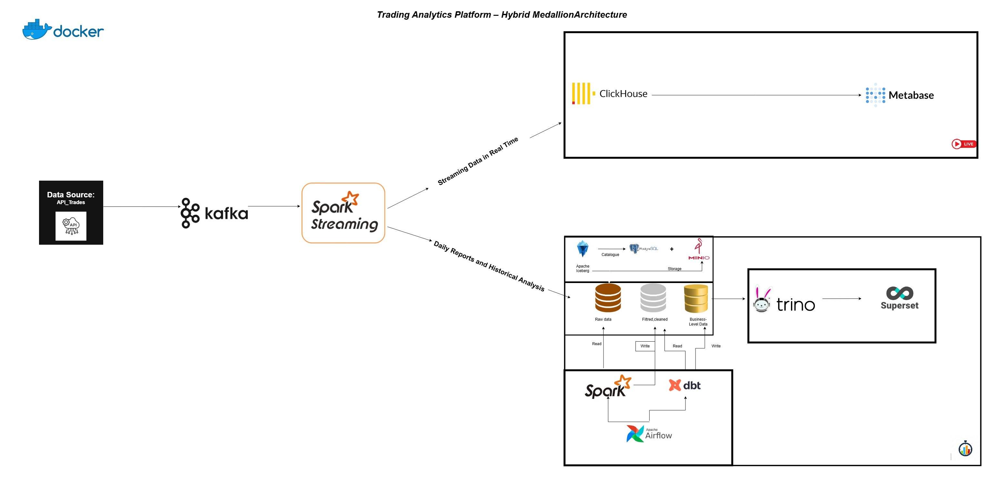

Plateforme d'Analytics Trading en Temps Réel | Data Lakehouse Hybride
Architecture Medallion
Kafka
Spark
Iceberg
ClickHouse
Airflow
dbt
Trino
Docker
Architecture hybride de bout en bout : Data lakehouse avec layers Medallion (Bronze/Silver/Gold), combinant pipelines batch et streaming temps réel.
Stack complète (10+ services containerisés) :
- Ingestion : Kafka streaming + batch files
- Processing : Spark batch & streaming, dbt transformations
- Storage : Apache Iceberg (catalog), ClickHouse (OLAP), PostgreSQL (metadata)
- Query : Trino query engine (fédération de sources)
- Orchestration : Airflow (DAGs EOD), Redis cache
- BI : Dual dashboards (Superset + Metabase)
Performance : Latence temps réel <5s, architecture scalable et résiliente, traçabilité complète des données.